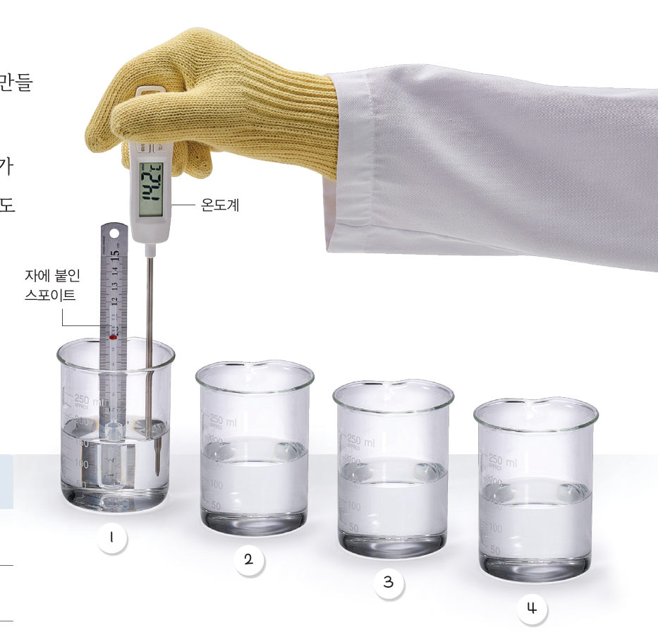

교과서 ‘다르게 해 보기’의 구리 통과 실린더처럼, 물에 담근 병 속 공기를 데우면 주사기 피스톤이 밀려 올라간다. LM35 온도 센서로 물의 온도를, 초음파 센서로 피스톤이 올라간 높이를 재서 온도와 부피의 관계를 그래프로 나타내 보자.
준비물 아두이노 UNO, 브레드보드, LM35 온도 센서, 초음파 센서(HC-SR04), 점퍼선, 작은 유리병이나 페트병(250 mL 정도) + 구멍 뚫린 고무마개, 실리콘 관(20 cm), 60 mL 플라스틱 주사기, 종이 카드, 큰 그릇(수조), 찬물·뜨거운 물, 비닐 랩, 스탠드, 노트북(크롬)
| 부품 | 부품 핀 | 아두이노 핀 |
|---|---|---|
| LM35 온도 센서 (평평한 면이 앞) | 왼쪽 다리 (VCC) | 5V |
| 가운데 다리 (OUT) | A0 | |
| 오른쪽 다리 (GND) | GND | |
| 초음파 센서 HC-SR04 | VCC | 5V |
| TRIG | 9번 | |
| ECHO | 10번 | |
| GND | GND |
코드를 불러오는 중…
| 평가 항목 | 스스로 평가 |
|---|---|
| 전기 부품을 물에서 멀리 두고, 뜨거운 물을 안전하게 다루었다. | |
| 측정값으로 온도–부피 그래프를 그리고, 기체의 온도와 부피 관계를 설명했다. |